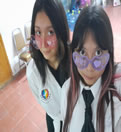

Querida majito,
¿Sabias que es muy divertido crear páginas web? JAJAJA lo que decia en la notita no era mentira, no hay money, pero si creatividad JAJJA, digo, las amistades son raras, por que ¿Qúe hago yo haciendo un sitio web como regalo de San Valentín?
Anyways, aqui en este pequeño lugarsito quiero darte las gracias por ser parte de mi vida, por apoyarme en los momentos difíciles y por compartir tantas risas y recuerdos inolvidables. Eres una persona INCREIBLE y siempre estaré agradecida con Diosito por nuestra amistad.
Son tantas las cosas que haz hecho por mi que se me haría imposible enumerarlas pq nunca acabaría, gracias por escucharme, por estar conmigo siempre, por ser mi apoyo, gracias or hacerme sentir un poquito de felicidad después de lo de mi boris, eres y seguirás siendo mi rayito de luz que alegra mis diás de cualquier forma.
Creemé que simpre estoy recordandote, ya sea porque vi un vestido o playera que creo que te quedaría bien, porque veo algo de lo que te gusta, porque veo los atardeceres que se que te gustarian o porque le cuento a todo el mundo sobre mi fenomenal mejor amiga.
Si sigo escribiendo nunca acabaría, te lo juro JAJAJ. En fin, sabes q no soy buena diceindo estas cosas en voz alta, pero gracias por tano majito, espero que siempre sigas siendo mi mejor amiga :)
¡Recuerda que te quiero muchisimoooo!
Con amors, tu pelona fav, Abrilll :)))
P.D: NO SE COMO HACER LA IMAGEN MÁS GRANDE, ME ESTRESÉ AJJA